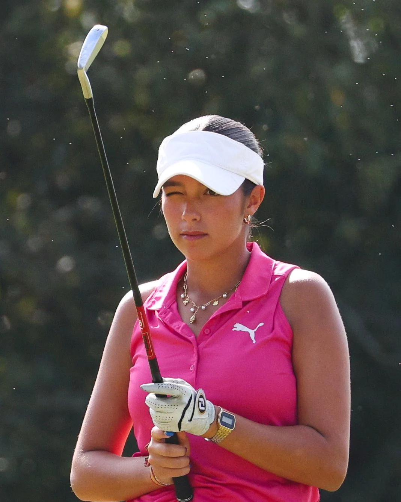

Percurso
Campeã nacional aos dez, e outra vez aos dezassete
Golfista amadora do Vale de Janelas, em Óbidos. Seleção Nacional Amadora Feminina. Campeã nacional Sub-18 em título.

Ganhou o primeiro campeonato nacional aos dez anos. Sete anos depois tem quatro, joga o calendário europeu, e ainda não saiu do escalão Sub-18.
Francisca Salgado joga pelo Vale de Janelas, em Óbidos, e representa a Seleção Nacional Amadora Feminina. Começou cedo: em 2018 era vice-campeã nacional de Sub-10, no Jamor, e jogava o Open World Kids Golf na Amendoeira. No ano seguinte, em Miramar, ganhou o primeiro título nacional. Em 2021 juntou o Sub-12 e, em 2022, foi vice-campeã de Sub-14.
A estreia internacional pela Seleção foi em 2023, no Campeonato Internacional da Bélgica de Sub-14: sexta classificada e melhor portuguesa da prova, a baixar o resultado dia após dia — 78, 75, 73. 2024 foi o ano em que ganhou tudo: os dois primeiros torneios do Circuito Aquapor, o ranking «Ouro» feminino de toda a época, e o GJG Algarve Juniors International, em Castro Marim, onde foi a única das doze jogadoras a assinar uma volta abaixo do par no desenho de Seve Ballesteros. Pelo meio, vice-campeã nacional de Sub-16.
Em 2025 estreou-se num Europeu de equipas absoluto, aos dezasseis anos, e foi convidada a jogar como amadora o Super Bock Ladies Open at Vidago Palace — a primeira prova do circuito profissional europeu feminino em Portugal em oito anos. Venceu o Drive Tour no Tejo, foi vice-campeã da Taça da FPG e terceira nas Astúrias.
2026 trouxe dois títulos nacionais em dois meses: os Pares Amador, no Montado, com Rodrigo Constantino, e o Sub-18, na Aroeira, liderado do princípio ao fim. A época levou-a a Penina, Guadalmina, Saint-Cloud, Slieve Russell com a Seleção, Prestbury — onde chegou a ser quinta no English Girls’ Open e acabou no 28.º lugar — e Málaga. É atleta apoiada pela Fundação do Desporto e joga canhota.
Ano a ano
Os resultados todos, com voltas e marcadores, estão na página dos resultados.
Em vídeo
Dos nove anos até agora
Da entrevista no Super Bock Ladies Open aos vídeos mais antigos que há dela em campo — o Open World Kids Golf de 2018, no Algarve, onde joga ao lado de Amélia Gabin, hoje companheira de Seleção. Nada é carregado do YouTube até carregar no botão.